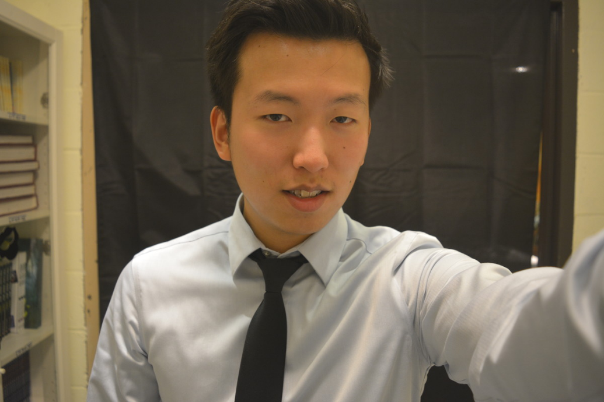

Upcoming graduate of Columbia Full Flex BootCamp, David Wong is determined to use his new found knowledge to grow in the tech industry. David has been fascinated by technology ever since his first computer at an age of 5. David would later use scripts in games to simulate gameplay without human interaction. This would give David a huge advantage in games through the use of scripts. As time passed, David attended Stony Brook University. David's passion for helping people let him obtain a degree in sociology. Now, with skills acquired through Columbia University, David is one step closer to his dream of becoming a tech genius who will shape the future.